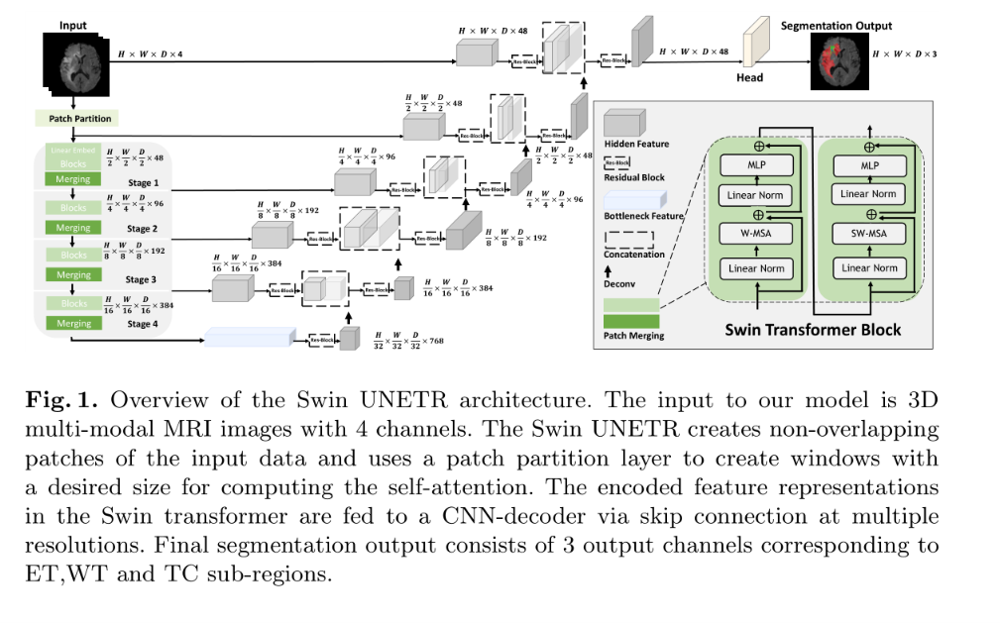
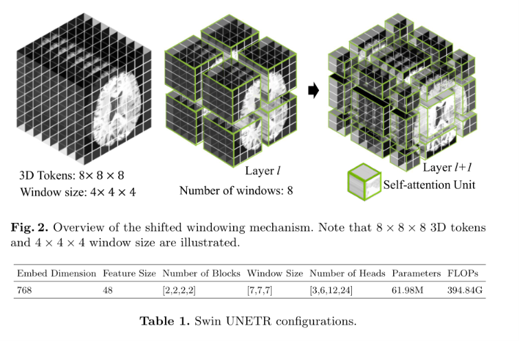

<!DOCTYPE html>


<html lang="zh-CN">


<head>
  <meta name="baidu-site-verification" content="codeva-NSg7ynviLa" />
  <meta charset="utf-8" />
    
  <meta name="viewport" content="width=device-width, initial-scale=1, maximum-scale=1" />
  <title>
    Swin_UNETR |  
  </title>
  <meta name="generator" content="hexo-theme-ayer">
  
  <link rel="shortcut icon" href="/images/mojie.jpg" />
  
  
<link rel="stylesheet" href="/dist/main.css">

  <link rel="stylesheet" href="https://cdn.jsdelivr.net/gh/Shen-Yu/cdn/css/remixicon.min.css">
  
<link rel="stylesheet" href="/css/custom.css">

  
  <script src="https://cdn.jsdelivr.net/npm/pace-js@1.0.2/pace.min.js"></script>
  
  

  

<link rel="alternate" href="/atom.xml" title="null" type="application/atom+xml">
</head>

</html>

<body>
  <div id="app">
    
      
    <main class="content on">
      <section class="outer">
  <article
  id="post-Swin-UNETR"
  class="article article-type-post"
  itemscope
  itemprop="blogPost"
  data-scroll-reveal
>
  <div class="article-inner">
    
    <header class="article-header">
       
<h1 class="article-title sea-center" style="border-left:0" itemprop="name">
  Swin_UNETR
</h1>
 

    </header>
     
    <div class="article-meta">
      <a href="/posts/6a45453d/" class="article-date">
  <time datetime="2026-11-10T06:51:40.000Z" itemprop="datePublished">2026-11-10</time>
</a>   
<div class="word_count">
    <span class="post-time">
        <span class="post-meta-item-icon">
            <i class="ri-quill-pen-line"></i>
            <span class="post-meta-item-text"> 字数统计:</span>
            <span class="post-count">2.7k</span>
        </span>
    </span>

    <span class="post-time">
        &nbsp; | &nbsp;
        <span class="post-meta-item-icon">
            <i class="ri-book-open-line"></i>
            <span class="post-meta-item-text"> 阅读时长≈</span>
            <span class="post-count">10 分钟</span>
        </span>
    </span>
</div>
 
    </div>
      
    <div class="tocbot"></div>


  
    <div class="article-entry" itemprop="articleBody">
       
  <p>介绍 Swin UNETR 模型。</p>
<span id="more"></span>
<h1 id="swin-unetr">3 Swin UNETR</h1>
<h2 id="编码器encoder">3.1 编码器（Encoder）</h2>
<p>我们在图 1 中展示了 Swin UNETR 的架构。Swin UNETR 模型的输入 <span class="math inline">\(\mathcal{X} \in \mathbb{R}^{H \times W \times D \times S}\)</span> 是一个张量，其块分辨率为 <span class="math inline">\((H&#39;, W&#39;, D&#39;)\)</span>，维度为 <span class="math inline">\(H&#39; \times W&#39; \times D&#39; \times S\)</span>。我们首先利用一个 <strong>Patch Partition（块划分）层</strong>，创建一个 3D 令牌序列，其维度为 <span class="math inline">\(\left[\frac{H}{H&#39;}\right] \times \left[\frac{W}{W&#39;}\right] \times \left[\frac{D}{D&#39;}\right]\)</span>，并将它们投影到维度为 <span class="math inline">\(C\)</span> 的嵌入空间中。自注意力在划分阶段创建的<strong>非重叠窗口</strong>内计算，以实现高效的令牌交互建模。</p>
<p></p>
<p>图 2 展示了后续层的<strong>移位窗口机制</strong>。具体来说，在 Transformer 编码器的第 <span class="math inline">\(l\)</span> 层，我们使用大小为 <span class="math inline">\(M \times M \times M\)</span> 的窗口，将一个 3D 令牌均匀划分为 <span class="math inline">\(\left[\frac{H&#39;}{M}\right] \times \left[\frac{W&#39;}{M}\right] \times \left[\frac{D&#39;}{M}\right]\)</span> 个区域。随后，在第 <span class="math inline">\(l+1\)</span> 层，划分的窗口区域沿各维度移动 <span class="math inline">\(\left(\left[\frac{M}{2}\right], \left[\frac{M}{2}\right], \left[\frac{M}{2}\right]\right)\)</span> 个体素。在后续层中，这种移位窗口机制交替进行，从而使得相邻窗口之间能够交互信息。</p>
<p></p>
<h2 id="损失函数loss-function">3.2 损失函数（Loss Function）</h2>
<p>我们使用 <strong>软 Dice 损失函数（soft Dice loss）</strong> [30]，它以体素方式计算，公式如下：</p>
<p><span class="math display">\[
\mathcal{L}(G,Y) = 1 - \frac{2}{J}\sum_{j = 1}^{J}\frac{\sum_{i = 1}^{I}G_{i,j}Y_{i,j}}{\sum_{i = 1}^{I}G_{i,j}^{2} + \sum_{i = 1}^{I}Y_{i,j}^{2}}. \quad (3)
\]</span></p>
<p>其中：
- <span class="math inline">\(I\)</span> 表示体素总数；
- <span class="math inline">\(J\)</span> 表示类别数；
- <strong><span class="math inline">\(G_{i,j}\)</span></strong>：第 <span class="math inline">\(i\)</span> 个体素在第 <span class="math inline">\(j\)</span> 类上的 <strong>真实标签（Ground Truth）</strong>，值为 0 或 1（one-hot 编码）
- <strong><span class="math inline">\(Y_{i,j}\)</span></strong>：第 <span class="math inline">\(i\)</span> 个体素在第 <span class="math inline">\(j\)</span> 类上的 <strong>预测概率</strong>，值为 0~1 之间的连续值（经过 softmax 输出）</p>
<p><strong>计算流程（以单个类别</strong> <span class="math inline">\(j\)</span> 为例）</p>
<ol type="1">
<li><strong>分子</strong>：<span class="math inline">\(\sum_{i} G_{i,j} Y_{i,j}\)</span> —— 真实标签与预测概率的<strong>逐元素乘积之和</strong>，即预测正确的部分（交集）。</li>
<li><strong>分母</strong>：<span class="math inline">\(\sum_{i} G_{i,j}^{2} + \sum_{i} Y_{i,j}^{2}\)</span> —— 真实标签的平方和与预测概率的平方和之和（相当于两集合的模长平方之和）。</li>
<li><strong>比值</strong>：<span class="math inline">\(2 \times \frac{\text{分子}}{\text{分母}}\)</span> —— 即 <strong>Dice 系数</strong>，取值范围 0~1，值越大表示分割越准确。</li>
<li><strong>损失</strong>：<span class="math inline">\(1 - \text{Dice系数}\)</span> —— 转化为损失函数，值越小越好。</li>
</ol>
<p><strong>为什么叫“软”Dice？</strong></p>
<ul>
<li><strong>硬 Dice</strong>：使用 <strong>0/1 二值预测</strong>（即取最大类别），适合离散输出。</li>
<li><strong>软 Dice</strong>：使用 <strong>连续概率值（如 softmax 输出）</strong>，允许网络在训练过程中进行梯度回传和反向传播，更适合端到端训练。</li>
</ul>
<p><strong>核心优势</strong></p>
<p>Dice 损失天然适合处理<strong>类别极度不平衡</strong>的分割任务（如肿瘤只占图像很小一部分）。因为它直接优化 <strong>重叠度</strong>，而不像交叉熵那样对每个像素独立考虑，从而能有效缓解背景主导梯度的问题。</p>
<h2 id="实现细节implementation-details">3.3 实现细节（Implementation Details）</h2>
<p>Swin UNETR 使用 <strong>PyTorch</strong>³ 和 <strong>MONAI</strong>⁴ 实现，并在配备 8 块 NVIDIA V100 GPU 的 DGX-1 集群上训练。<strong>表 1</strong> 详细列出了 Swin UNETR 架构的配置、参数量和 FLOPs。</p>
<p>学习率设置为 <strong>0.0008</strong>。我们根据<strong>非零体素</strong>将所有输入图像归一化为零均值和单位标准差。训练时，从 3D 图像体积中随机裁剪 <span class="math inline">\(128 \times 128 \times 128\)</span> 的块。我们以 <strong>0.5 的概率</strong>对所有三个轴应用随机轴镜像翻转。此外，我们还应用<strong>随机强度偏移</strong>（范围为 <span class="math inline">\([-0.1, 0.1]\)</span>）和<strong>随机强度缩放</strong>（范围为 <span class="math inline">\([0.9, 1.1]\)</span>）。</p>
<p><strong>表 1. Swin UNETR 配置</strong></p>
<table>
<colgroup>
<col style="width: 10%" />
<col style="width: 10%" />
<col style="width: 21%" />
<col style="width: 12%" />
<col style="width: 27%" />
<col style="width: 8%" />
<col style="width: 9%" />
</colgroup>
<thead>
<tr>
<th>嵌入维度</th>
<th>特征尺寸</th>
<th>块数量（各阶段）</th>
<th>窗口大小</th>
<th>注意力头数（各阶段）</th>
<th>参数量</th>
<th>FLOPs</th>
</tr>
</thead>
<tbody>
<tr>
<td>768</td>
<td>48</td>
<td>[2, 2, 2, 2]</td>
<td>[7, 7, 7]</td>
<td>[3, 6, 12, 24]</td>
<td>61.98M</td>
<td>394.84G</td>
</tr>
</tbody>
</table>
<h3 id="嵌入维度-与标准swin不同点">嵌入维度-与标准swin不同点</h3>
<ul>
<li>特征尺寸（feature size）: Patch Embedding 后映射到 <strong>48 维</strong>的向量空间，就是 SWIN 中的 C 。当数据从一个阶段传到下一个阶段（Patch Merging），空间分辨率减半，但“员工人数”（通道数）会翻倍：48 → 96 → 192 → 384。</li>
<li><strong>嵌入维度</strong>（Embedding Dimension）：Transformer 内部每个 token 的特征向量长度，具体做法如下，这就是和标准的 swin transformer 不一样的地方。</li>
</ul>
<p><strong>具体计算过程</strong>：</p>
<ol type="1">
<li>假设输入一个 48 维的向量 <span class="math display">\[X\]</span>（形状 [48]）（或后续阶段的 96、192、384）。</li>
<li>计算 Q、K、V 时，会使用三个矩阵 <span class="math display">\[W_Q, W_K, W_V\]</span>（形状为 [48, 768]）进行乘法：
<ul>
<li><span class="math display">\[Q = X \cdot W_Q\]</span>，得到形状 [768]。</li>
<li>同理 K、V 也变为 768 维。</li>
</ul></li>
<li>在 768 维空间里计算点积注意力（<span class="math display">\[Q \cdot K^T\]</span>）。</li>
<li>注意力结果会通过另一个线性层 <span class="math display">\[W_O\]</span>（形状 [768, 48]），映射回 48 维，作为该块的输出。</li>
</ol>
<h2 id="数据集与模型集成dataset-and-model-ensembling">3.4 数据集与模型集成（Dataset and Model Ensembling）</h2>
<p>BraTS 挑战赛旨在通过提供带有医生标注的体素级真实标签的 3D MRI 数据集，来评估脑肿瘤语义分割的最先进方法 [6, 29, 5, 3, 4]。BraTS 2021 挑战赛的训练数据集包含 <strong>1251 例</strong>受试者，每例包含四种 3D MRI 模态：a) 原生 T1，b) 增强后 T1 加权（T1Gd），c) T2 加权（T2），以及 d) T2 液体衰减反转恢复（T2-FLAIR）。这些数据经过刚体对齐，并重采样至 <span class="math inline">\(1 \times 1 \times 1\)</span> mm 的各向同性分辨率，且已完成去颅骨处理。输入图像尺寸为 <span class="math inline">\(240 \times 240 \times 155\)</span>。数据收集自多个机构，使用多种 MRI 扫描仪。</p>
<p>标注包括三个肿瘤子区域：<strong>增强肿瘤（ET）</strong>、<strong>瘤周水肿（ED）</strong> 以及<strong>坏死和非增强肿瘤核心（NCR/NET）</strong>。这些标注被组合为三个嵌套的子区域：<strong>全肿瘤（WT）</strong>、<strong>肿瘤核心（TC）</strong> 和 <strong>增强肿瘤（ET）</strong>。图 3 展示了所有语义类别的典型分割输出。</p>
<p>在本次挑战赛中，还提供了两个不包含真实标签的额外数据集，分别用于<strong>验证阶段</strong>和<strong>测试阶段</strong>。这些数据集要求参与者将分割掩膜上传至主办方服务器进行评估。验证数据集包含 <strong>219 例</strong>病例，用于中间模型评估。测试数据集的相关信息未向参与者提供。</p>
<p>我们的模型在 BraTS 2021 数据集上训练，训练集和验证集分别包含 1251 例和 219 例病例。验证集对应的分割标签未公开，性能基准通过向 BraTS 2021 官方服务器提交获得。我们采用 <strong>五折交叉验证</strong>，划分比例为 80:20。我们未使用任何额外数据。</p>
<p>最终结果通过对 <strong>10 个 Swin UNETR 模型进行集成</strong>获得，以提高性能并对所有预测达成更好的一致性。这些集成模型来自两次独立的五折交叉验证训练。</p>
<h3 id="如何集成">如何集成</h3>
<p>他们完整运行了两轮五折交叉验证（可能使用不同随机种子或数据划分），每轮产生 5 个模型，两轮共得到 <strong>10 个模型</strong>。</p>
<p>在推理时，将 <strong>同一个输入图像</strong> 分别输入这 10 个模型，得到 10 个分割结果（每个像素属于某类别的概率）。最终结果通过 <strong>投票或平均概率</strong> 决定：</p>
<ul>
<li><strong>概率平均</strong>：对 10 个模型的 softmax 输出求均值，取最大概率的类别作为最终预测。</li>
<li>这种方法能有效 <strong>平滑单个模型的偶然误差</strong>，提升整体鲁棒性和 Dice 分数。</li>
</ul>
<p>为什么有效？</p>
<ul>
<li>不同模型在训练时看到了不同的数据子集，学到了略有差异的决策边界。</li>
<li>集成可以减少<strong>过拟合</strong>风险，尤其是在数据有限时。</li>
<li>在 BraTS 这种高竞争性挑战中，集成的 0.5%~1% Dice 提升往往是胜负关键。</li>
</ul>
<p>论文中没有介绍解码器，这里讨论一下。</p>
<h1 id="解码器">解码器</h1>
<p>虽然论文对解码器的描述比较简略，但结合其官方实现（MONAI）和相关资料，可以清晰地还原出它的结构。SwinUNETR的解码器是一个<strong>基于CNN的、与编码器结构对称的上采样网络</strong>，负责将抽象特征恢复为精细的分割图。</p>
<h2 id="解码器的核心输入跳跃连接">🧬 解码器的核心输入：跳跃连接</h2>
<p>解码器并非只接收编码器最深层的输出，它的输入由两部分组成：</p>
<ol type="1">
<li><p><strong>来自编码器对应层的特征</strong>：编码器（Swin Transformer）在4个不同分辨率阶段输出的特征图，会通过<strong>跳跃连接（Skip Connections）</strong> 直接传递到解码器的对应阶段。</p>
<blockquote>
<p>看架构图实际是5个，除了4个stage的输出，还包括了 <strong>Patch Embedding层</strong>的输出，其分辨率为 <span class="math inline">\(H/2 \times W/2 \times D/2\)</span>，之后分辨率逐级递减，并且通道数目翻倍</p>
</blockquote></li>
<li><p><strong>来自上一解码器层上采样后的特征</strong>：解码器自身深层（分辨率更低）的输出，会通过上采样逐步恢复到更高分辨率。</p></li>
</ol>
<h2 id="解码器的核心组件与工作流程">🏗️ 解码器的核心组件与工作流程</h2>
<p>解码器的主体由<strong>4个上采样阶段</strong>组成，与编码器的4个阶段一一对应。每个阶段的核心操作是：</p>
<ol type="1">
<li><strong>特征重整形与残差处理 (Reshape &amp; Residual Block)</strong>：来自编码器的跳跃连接特征，会先被重整形，然后通过一个<strong>残差块（Residual Block）</strong> 进行处理。这个残差块通常包含两个 <strong><code>3×3×3</code> 的3D卷积层</strong>，每层后都跟随<strong>实例归一化（Instance Normalization）</strong> 和激活函数。</li>
<li><strong>上采样 (Upsampling)</strong>：经过残差块处理后的特征图，会通过<strong>转置卷积（Transposed Convolution）</strong> 或<strong>插值+卷积</strong>的方式进行上采样，将空间分辨率提高一倍。</li>
<li><strong>特征拼接与融合 (Concatenation &amp; Refinement)</strong>：将上采样得到的特征图，与来自<strong>编码器同层（通过跳跃连接）</strong> 的特征图在通道维度上<strong>拼接（Concatenate）</strong> 起来。融合后的特征会再通过一个残差块进行 refinement。</li>
</ol>
<h2 id="最后的输出层">🎯 最后的输出层</h2>
<p>经过4个上采样阶段后，解码器最终会输出一个与原始输入图像空间分辨率相同的特征图。最后，通过一个 <strong><code>1×1×1</code> 的卷积层（UnetOutBlock）</strong>，将通道数映射到目标类别数量（如3），并用<strong>Sigmoid</strong>或<strong>Softmax</strong>函数输出最终的分割概率图。</p>
<h2 id="总结">💎 总结</h2>
<p>SwinUNETR的解码器是一个标准的、基于CNN的U-Net解码器。它的设计简洁而高效，通过<strong>跳跃连接</strong>融合编码器的多尺度特征，并利用<strong>残差块</strong>和<strong>上采样</strong>逐步恢复空间细节，最终生成精准的分割结果。你可以参考MONAI官方文档中关于 <code>UnetrUpBlock</code> 的源码来了解更具体的实现细节。</p>
 
      <!-- reward -->
      
    </div>
    

    <!-- copyright -->
    
    <div class="declare">
      <ul class="post-copyright">
        <li>
          <i class="ri-copyright-line"></i>
          <strong>版权声明： </strong>
          
          本博客所有文章除特别声明外，著作权归作者所有。转载请注明出处！
          
        </li>
      </ul>
    </div>
    
    <footer class="article-footer">
       
    </footer>
  </div>

   
  <nav class="article-nav">
    
      <a href="/posts/47a67cad/" class="article-nav-link">
        <strong class="article-nav-caption">上一篇</strong>
        <div class="article-nav-title">
          
            SwinUNETR架构自监督训练CVPR2022论文
          
        </div>
      </a>
    
    
      <a href="/posts/b8b0480a/" class="article-nav-link">
        <strong class="article-nav-caption">下一篇</strong>
        <div class="article-nav-title">PyTorch官方文档-60分钟入门</div>
      </a>
    
  </nav>

  
   
     
</article>

</section>
      <footer class="footer">
  <div class="outer">
    <ul>
      <li>
        Copyrights &copy;
        2019-2026
        <i class="ri-heart-fill heart_icon"></i> Vincere Zhou
      </li>
    </ul>
    <ul>
      <li>
        
        
        <span>
  <span><i class="ri-user-3-fill"></i>访问人数:<span id="busuanzi_value_site_uv"></span></s>
  <span class="division">|</span>
  <span><i class="ri-eye-fill"></i>浏览次数:<span id="busuanzi_value_page_pv"></span></span>
</span>
        
      </li>
    </ul>
    <ul>
      
    </ul>
    <ul>
      
    </ul>
    <ul>
      <li>
        <!-- cnzz统计 -->
        
      </li>
    </ul>

    <!-- 运行天数 -->
	<ul>
		<li><span id="runtime_span"></span></li>
	</ul>
    <script type="text/javascript">			
        function show_runtime() {
            window.setTimeout("show_runtime()", 1000);
            X = new Date("08/15/2019 21:50:56");
            Y = new Date();
            T = (Y.getTime() - X.getTime());
            M = 24 * 60 * 60 * 1000;
            a = T / M;
            A = Math.floor(a);
            b = (a - A) * 24;
            B = Math.floor(b);
            c = (b - B) * 60;
            C = Math.floor((b - B) * 60);
            D = Math.floor((c - C) * 60);
            runtime_span.innerHTML = "小站在各种崩坏中坚持了: " + A + "天" + B + "小时" + C + "分" + D + "秒"
        }
        show_runtime();
    </script>

  </div>
</footer>
      <div class="float_btns">
        <div class="totop" id="totop">
  <i class="ri-arrow-up-line"></i>
</div>

      </div>
    </main>
    <aside class="sidebar on">
      <button class="navbar-toggle"></button>
<nav class="navbar">
  
  <div class="logo">
    <a href="/"></a>
  </div>
  
  <ul class="nav nav-main">
    
    <li class="nav-item">
      <a class="nav-item-link" href="/">主页</a>
    </li>
    
    <li class="nav-item">
      <a class="nav-item-link" href="/archives">归档</a>
    </li>
    
    <li class="nav-item">
      <a class="nav-item-link" href="/categories">分类</a>
    </li>
    
    <li class="nav-item">
      <a class="nav-item-link" href="/tags">标签</a>
    </li>
    
    <li class="nav-item">
      <a class="nav-item-link" href="/friends">友链</a>
    </li>
    
    <li class="nav-item">
      <a class="nav-item-link" href="/about">关于</a>
    </li>
    
  </ul>
</nav>
<nav class="navbar navbar-bottom">
  <ul class="nav">
    <li class="nav-item">
      
      <a class="nav-item-link nav-item-search"  title="搜索">
        <i class="ri-search-line"></i>
      </a>
      
      
      <a class="nav-item-link" target="_blank" href="/atom.xml" title="RSS Feed">
        <i class="ri-rss-line"></i>
      </a>
      
    </li>
  </ul>
</nav>
<div class="search-form-wrap">
  <div class="local-search local-search-plugin">
  <input type="search" id="local-search-input" class="local-search-input" placeholder="Search...">
  <div id="local-search-result" class="local-search-result"></div>
</div>
</div>
    </aside>
    <script>
      if (window.matchMedia("(max-width: 768px)").matches) {
        document.querySelector('.content').classList.remove('on');
        document.querySelector('.sidebar').classList.remove('on');
      }
    </script>
    <div id="mask"></div>

<!-- #reward -->
<div id="reward">
  <span class="close"><i class="ri-close-line"></i></span>
  <p class="reward-p"><i class="ri-cup-line"></i>请我喝杯茶吧~</p>
  <div class="reward-box">
    
    <div class="reward-item">
      
      <span class="reward-type">支付宝</span>
    </div>
    
    
    <div class="reward-item">
      
      <span class="reward-type">微信</span>
    </div>
    
  </div>
</div>
    
<script src="/js/jquery-2.0.3.min.js"></script>


<script src="/js/lazyload.min.js"></script>

<!-- Tocbot -->


<script src="/js/tocbot.min.js"></script>

<script>
  tocbot.init({
    tocSelector: '.tocbot',
    contentSelector: '.article-entry',
    headingSelector: 'h1, h2, h3, h4, h5, h6',
    hasInnerContainers: true,
    scrollSmooth: true,
    scrollContainer: 'main',
    positionFixedSelector: '.tocbot',
    positionFixedClass: 'is-position-fixed',
    fixedSidebarOffset: 'auto'
  });
</script>

<script src="https://cdn.jsdelivr.net/npm/jquery-modal@0.9.2/jquery.modal.min.js"></script>
<link rel="stylesheet" href="https://cdn.jsdelivr.net/npm/jquery-modal@0.9.2/jquery.modal.min.css">
<script src="https://cdn.jsdelivr.net/npm/justifiedGallery@3.7.0/dist/js/jquery.justifiedGallery.min.js"></script>

<script src="/dist/main.js"></script>

<!-- ImageViewer -->

<!-- Root element of PhotoSwipe. Must have class pswp. -->
<div class="pswp" tabindex="-1" role="dialog" aria-hidden="true">

    <!-- Background of PhotoSwipe. 
         It's a separate element as animating opacity is faster than rgba(). -->
    <div class="pswp__bg"></div>

    <!-- Slides wrapper with overflow:hidden. -->
    <div class="pswp__scroll-wrap">

        <!-- Container that holds slides. 
            PhotoSwipe keeps only 3 of them in the DOM to save memory.
            Don't modify these 3 pswp__item elements, data is added later on. -->
        <div class="pswp__container">
            <div class="pswp__item"></div>
            <div class="pswp__item"></div>
            <div class="pswp__item"></div>
        </div>

        <!-- Default (PhotoSwipeUI_Default) interface on top of sliding area. Can be changed. -->
        <div class="pswp__ui pswp__ui--hidden">

            <div class="pswp__top-bar">

                <!--  Controls are self-explanatory. Order can be changed. -->

                <div class="pswp__counter"></div>

                <button class="pswp__button pswp__button--close" title="Close (Esc)"></button>

                <button class="pswp__button pswp__button--share" style="display:none" title="Share"></button>

                <button class="pswp__button pswp__button--fs" title="Toggle fullscreen"></button>

                <button class="pswp__button pswp__button--zoom" title="Zoom in/out"></button>

                <!-- Preloader demo http://codepen.io/dimsemenov/pen/yyBWoR -->
                <!-- element will get class pswp__preloader--active when preloader is running -->
                <div class="pswp__preloader">
                    <div class="pswp__preloader__icn">
                        <div class="pswp__preloader__cut">
                            <div class="pswp__preloader__donut"></div>
                        </div>
                    </div>
                </div>
            </div>

            <div class="pswp__share-modal pswp__share-modal--hidden pswp__single-tap">
                <div class="pswp__share-tooltip"></div>
            </div>

            <button class="pswp__button pswp__button--arrow--left" title="Previous (arrow left)">
            </button>

            <button class="pswp__button pswp__button--arrow--right" title="Next (arrow right)">
            </button>

            <div class="pswp__caption">
                <div class="pswp__caption__center"></div>
            </div>

        </div>

    </div>

</div>

<link rel="stylesheet" href="https://cdn.jsdelivr.net/npm/photoswipe@4.1.3/dist/photoswipe.min.css">
<link rel="stylesheet" href="https://cdn.jsdelivr.net/npm/photoswipe@4.1.3/dist/default-skin/default-skin.min.css">
<script src="https://cdn.jsdelivr.net/npm/photoswipe@4.1.3/dist/photoswipe.min.js"></script>
<script src="https://cdn.jsdelivr.net/npm/photoswipe@4.1.3/dist/photoswipe-ui-default.min.js"></script>

<script>
    function viewer_init() {
        let pswpElement = document.querySelectorAll('.pswp')[0];
        let $imgArr = document.querySelectorAll(('.article-entry img:not(.reward-img)'))

        $imgArr.forEach(($em, i) => {
            $em.onclick = () => {
                // slider展开状态
                // todo: 这样不好，后面改成状态
                if (document.querySelector('.left-col.show')) return
                let items = []
                $imgArr.forEach(($em2, i2) => {
                    let img = $em2.getAttribute('data-idx', i2)
                    let src = $em2.getAttribute('data-target') || $em2.getAttribute('src')
                    let title = $em2.getAttribute('alt')
                    // 获得原图尺寸
                    const image = new Image()
                    image.src = src
                    items.push({
                        src: src,
                        w: image.width || $em2.width,
                        h: image.height || $em2.height,
                        title: title
                    })
                })
                var gallery = new PhotoSwipe(pswpElement, PhotoSwipeUI_Default, items, {
                    index: parseInt(i)
                });
                gallery.init()
            }
        })
    }
    viewer_init()
</script>

<!-- MathJax -->

<!-- Katex -->

<!-- busuanzi  -->


<script src="/js/busuanzi-2.3.pure.min.js"></script>


<!-- ClickLove -->

<!-- ClickBoom1 -->

<!-- ClickBoom2 -->

<!-- CodeCopy -->


<link rel="stylesheet" href="/css/clipboard.css">

<script src="https://cdn.jsdelivr.net/npm/clipboard@2/dist/clipboard.min.js"></script>
<script>
  function wait(callback, seconds) {
    var timelag = null;
    timelag = window.setTimeout(callback, seconds);
  }
  !function (e, t, a) {
    var initCopyCode = function(){
      var copyHtml = '';
      copyHtml += '<button class="btn-copy" data-clipboard-snippet="">';
      copyHtml += '<i class="ri-file-copy-2-line"></i><span>COPY</span>';
      copyHtml += '</button>';
      $(".highlight .code pre").before(copyHtml);
      $(".article pre code").before(copyHtml);
      var clipboard = new ClipboardJS('.btn-copy', {
        target: function(trigger) {
          return trigger.nextElementSibling;
        }
      });
      clipboard.on('success', function(e) {
        let $btn = $(e.trigger);
        $btn.addClass('copied');
        let $icon = $($btn.find('i'));
        $icon.removeClass('ri-file-copy-2-line');
        $icon.addClass('ri-checkbox-circle-line');
        let $span = $($btn.find('span'));
        $span[0].innerText = 'COPIED';
        
        wait(function () { // 等待两秒钟后恢复
          $icon.removeClass('ri-checkbox-circle-line');
          $icon.addClass('ri-file-copy-2-line');
          $span[0].innerText = 'COPY';
        }, 2000);
      });
      clipboard.on('error', function(e) {
        e.clearSelection();
        let $btn = $(e.trigger);
        $btn.addClass('copy-failed');
        let $icon = $($btn.find('i'));
        $icon.removeClass('ri-file-copy-2-line');
        $icon.addClass('ri-time-line');
        let $span = $($btn.find('span'));
        $span[0].innerText = 'COPY FAILED';
        
        wait(function () { // 等待两秒钟后恢复
          $icon.removeClass('ri-time-line');
          $icon.addClass('ri-file-copy-2-line');
          $span[0].innerText = 'COPY';
        }, 2000);
      });
    }
    initCopyCode();
  }(window, document);
</script>


<!-- CanvasBackground -->


<script>
window.MathJax = {
  tex: {
    inlineMath: [['$','$'], ['\\(','\\)']],
    displayMath: [['$$','$$'], ['\\[','\\]']],
    processEscapes: true
  },
  options: { skipHtmlTags: ['script','noscript','style','textarea','pre','code'] }
};
</script>
<script src="https://cdn.jsdelivr.net/npm/mathjax@3/es5/tex-chtml.js" async></script>


    
  </div>

<script src="/live2dw/lib/L2Dwidget.min.js?094cbace49a39548bed64abff5988b05"></script><script>L2Dwidget.init({"pluginRootPath":"live2dw/","pluginJsPath":"lib/","pluginModelPath":"assets/","tagMode":false,"debug":false,"model":{"jsonPath":"/live2dw/assets/wanko.model.json"},"display":{"position":"left","width":150,"height":300,"hOffset":80,"vOffset":-70},"mobile":{"show":false,"scale":0.5},"log":false});</script></body>

</html>